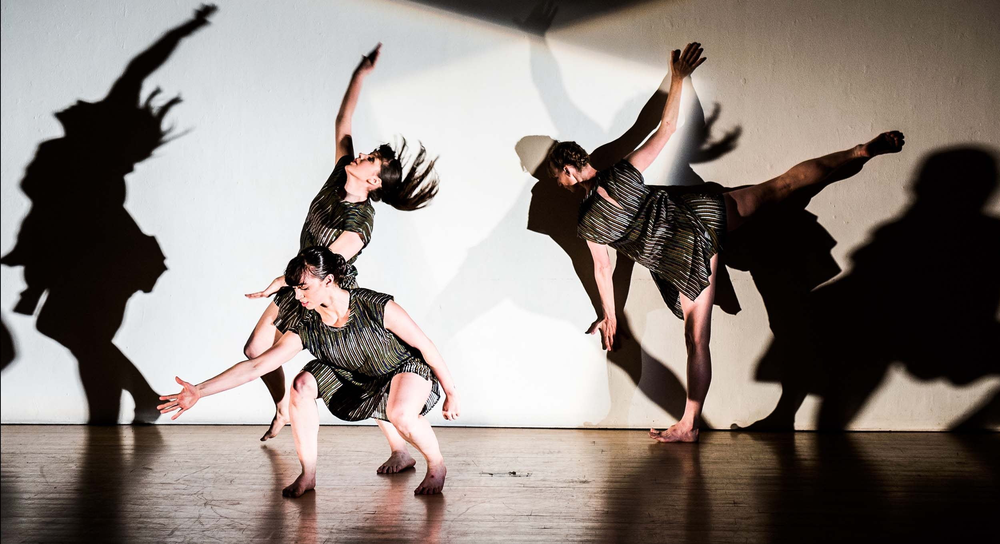
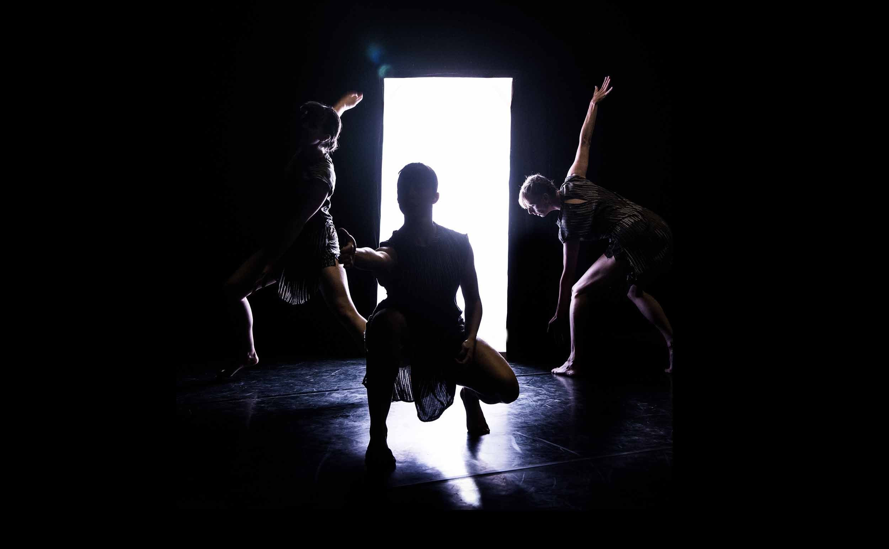

... And They Have Escaped
I helped the public art pioneers Greyworld develop the technical solution for “...And They Have Escaped”, an immersive installation by the NOCTURN Dance company.
Avatars, trapped inside our mobile devices, demand their freedom. They invade our three-dimensional world for the first time carrying an urgent cautionary message about real life.
I built a custom iOS App which interacted with iBeacons in the part of the installation named "Cabinet of Lost Experiences", letting visitors discover short dance films throughout the space.